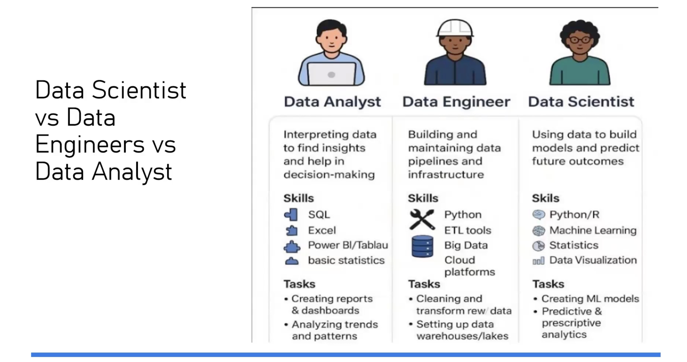
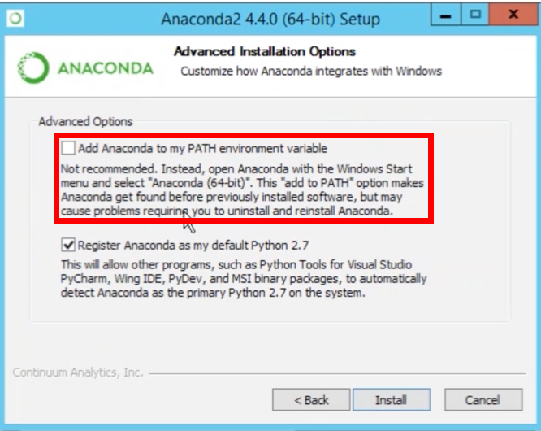
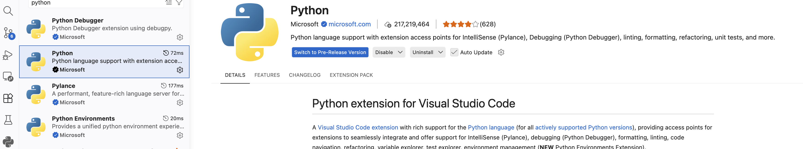
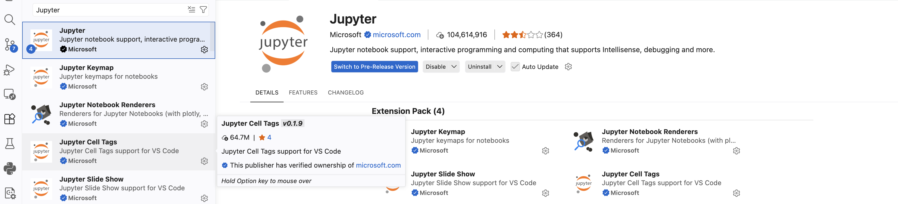
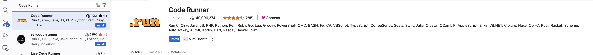

Introduction to Agentic AI and Data Roles
What is Agentic AI?
Agentic AI is an AI system that can do more than give a single reply. It can take your prompt as a goal, plan steps, use tools, perform actions, check results, and keep going step by step until the job is completed.
One-line definition
Agentic AI is goal-driven AI that uses prompts, planning, tools, memory, and feedback loops to take multi-step actions and complete tasks with minimal human guidance.
Full explanation in simple words
1) Prompt
A prompt is your instruction to the AI.
Example prompt:
"Find 3 beginner courses on AI and make a 6-month study plan."
2) Goal and constraints
From your prompt, the AI identifies:
- The main goal (what to achieve)
- The limits (time, budget, format, and rules)
3) Planning
Instead of answering immediately, it creates a small plan.
Example:
- Search courses
- Compare courses
- Build a schedule
- Present the final plan
4) Tools
Tools are extra abilities the AI can use outside normal text generation.
Examples of tools:
- Web search
- Calculator
- Code execution
- File reading and writing
- Calling APIs
- Database lookup
Without tools, AI can mostly "talk." With tools, AI can also "do."
5) Actions
The AI runs those tools to collect real information or perform real tasks.
6) Observation and feedback
After each action, it reads the result and checks:
- Did it work?
- Is anything missing?
- Did an error happen?
Then it adjusts the next step.
7) Memory
The AI keeps useful context while working.
- Short-term memory: what happened during this task
- Long-term memory (if enabled): user preferences and past decisions
8) Decision loop
It repeats this cycle:
Plan → Act → Check → Improve
This loop continues until the goal is reached or the process is stopped.
9) Guardrails and human control
Good agentic systems include safety controls, such as:
- Permission checks
- Blocked actions for risky operations
- Human approval for sensitive steps
Quick difference
A normal chatbot mostly gives one response. Agentic AI can run a workflow from start to finish.
Data Analyst vs Data Engineer vs Data Scientist

This image compares three common careers in the data world. They all work with data, but each role solves a different part of the problem.
Data Analyst
Main focus: understanding what already happened.
- Helps teams make decisions using reports and dashboards
- Finds trends and patterns in historical data
- Common skills: SQL, Excel, Power BI or Tableau, and basic statistics
Simple question they answer: "What is happening in the business right now?"
Data Engineer
Main focus: building the data foundation.
- Creates and maintains data pipelines (automatic data movement systems)
- Cleans and transforms raw data so others can use it safely
- Sets up storage systems like data warehouses and data lakes
- Common skills: Python, ETL tools, big data systems, and cloud platforms
Simple question they answer: "How do we make data reliable and ready to use?"
Data Scientist
Main focus: predicting what is likely to happen next.
- Builds machine learning models
- Uses statistics and experiments to test ideas
- Creates predictive systems (for example: demand forecast, churn prediction)
- Common skills: Python or R, machine learning, statistics, and visualization
Simple question they answer: "What will probably happen next, and why?"
How these roles connect
In most teams, the flow looks like this:
Raw Data → Data Engineer prepares it → Data Analyst explains it → Data Scientist predicts with it
In small companies, one person may do parts of all three roles. In larger companies, these are usually separate jobs.
Python Installation
Via Anaconda
Click Anaconda to install anaconda, which is a popular Python distribution that includes many data science libraries and tools.
NOTE: During the installation do not forget to check the box that says "Add Anaconda to my PATH environment variable" to ensure you can use Python from the command line.

Directly via Python
Click Python to install Python directly from the official website. This is a more lightweight option if you only need Python without the additional tools provided by Anaconda.
VS Code Installation:
Click VS Code to install Visual Studio Code, a popular code editor that supports Python development with features like debugging, extensions, and integrated terminal.
VS Code extensions for Python:
- Python VS Code Extension

- Jypyter VS Code Extension

- Code Runner VS Code Extension
